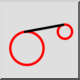

Tangents (divi apļi)
Rīkjosla / ikona:


Izvēlne: Zīmēt > Līnija > Tangents (divi apļi)
Īsais ceļvedis: L, T, 2
Komandas: linetangent2 | tangent2 | lt2
Rīkjosla / ikona:


Ar šo rīku izveidojiet pieskares no vienas esošas loka vai riņķa vienības līdz citai.